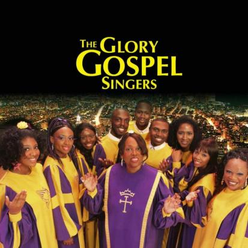

グローリー・ゴスペル・シンガーズ 2025
本場ニューヨークのゴスペルが、あなたの街にやってくる！
■ 公演期間：2025年11月23日(日) ～ 12月18日(木)
公演スケジュール
| 日時/開演時間 | 会場 | 備考 |
|---|---|---|
| 11月23日(日) 14:00 | ホクト文化ホール（長野県県民文化会館） | |
| 11月24日(月) 14:00 | 野田ガスホール(野田市文化会館) | |
| 11月25日(火) 18:30 | 高崎芸術劇場 大劇場 | |
| 11月26日(水) 18:30 | 文京シビックホール 大ホール | |
| 11月27日(木) 18:30 | 江戸川区総合文化センター 大ホール | |
| 11月28日(金) 14:00 / 18:30 | ルネこだいら（小平市民文化会館） | |
| 11月30日(日) 14:00 | 大分iichikoグランシアタ | |
| 12月1日(月) 19:00 | 川商ホール(鹿児島市民文化ホール) | |
| 12月2日(火) 18:30 | ベネックス長崎ブリックホール | |
| 12月4日(木) 18:30 | Niterra日本特殊陶業市民会館 フォレストホール | |
| 12月5日(金) 18:30 | 相模女子大学グリーンホール | |
| 12月6日(土) 15:00 | 東京エレクトロンホール宮城（宮城県民会館） | |
| 12月8日(月) 18:30 | なかのZERO 大ホール | |
| 12月9日(火) 18:30 | サンシティ越谷市民ホール | |
| 12月10日(水) 18:30 | けんしん郡山文化センター（郡山市民文化センター） 大ホール | |
| 12月11日(木) 18:30 | 新宿文化センター 大ホール | |
| 12月13日(土) 14:00 | 成田国際文化会館 | |
| 12月14日(日) 15:00 | パルセいいざか コンベンションホール | |
| 12月15日(月) 18:30 | 鎌倉芸術館 | |
| 12月16日(火) 18:30 | 文京シビックホール 大ホール | |
| 12月17日(水) 18:30 | すみだトリフォニーホール 大ホール | |
| 12月18日(木) 18:30 | 横浜みなとみらいホール 大ホール |
プロフィール
◆グローリー・ゴスペル・シンガーズ（Glory Gospel Singers）：ニューヨークで誕生した「グローリー・ゴスペル・シンガーズ」は、音楽の殿堂カーネギー・ホールやリンカーン・センターでパフォーマンスを繰り広げる、本場が誇るビッグ・ゴスペル・クワイア。ダイアナ・ロスやホイットニー・ヒューストン、アレサ・フランクリンらが大絶賛した彼らの魂の歌声は、全米1000カ所以上もの教会や各地の音楽祭で大感動の渦を巻き起こしている。これまでの日本でのコンサートでは、連日満員となり、ライブの熱気たるや必見の価値あり。本場ゴスペルの醍醐味をタップリと味わわせてくれる。
司会 プロフィール

◆湯澤かよこ（司会）：長野県伊那市出身。高校時代ホイットニー・ヒューストンの歌声に衝撃を受ける。同時期にゴスペルに興味を持ち始め、卒業後アメリカ・ボストンのBerklee College of Musicに留学。在学中は黒人9割のクワイヤにアジア人でただ1人認められ参加する。2006年に帰国した後はイメージソング・CMソングを多数制作。その他にも子どものための音楽活動や人権講演など各学校や教育機関をまわり活動中。